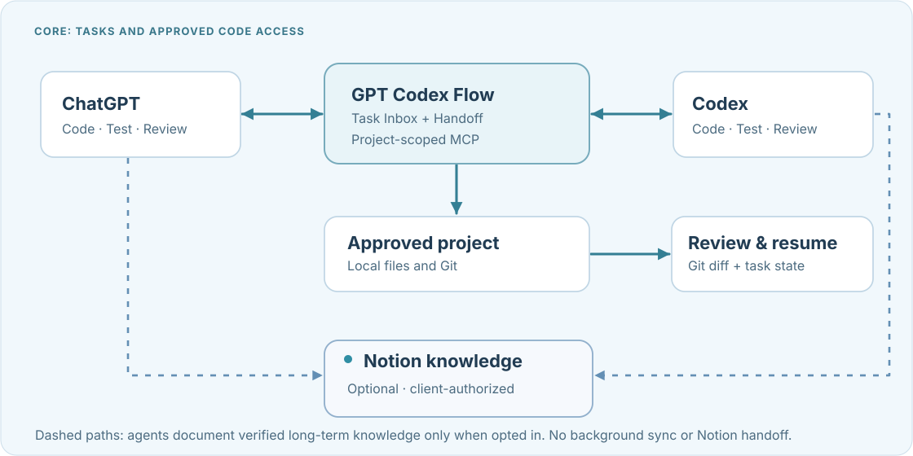
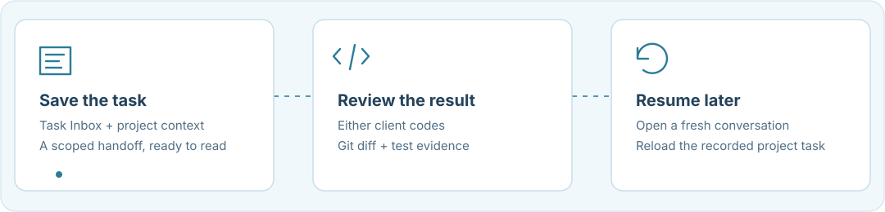
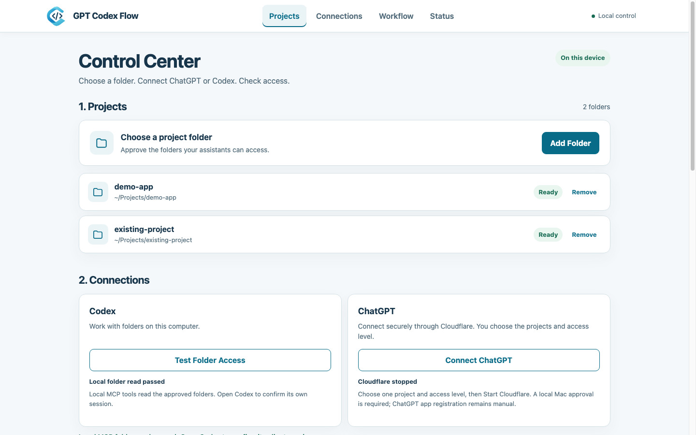

Choose a project
Approve a folder and select it in your MCP client.
Both assistants can code. Hand off tasks, review Git changes, and resume with saved project context.
Local Control Center. Your folders. Your permissions.

Approve a folder and select it in your MCP client.
Pass a scoped task through the Inbox. Each client uses its own permitted tools.
Check the Git diff and test evidence. Reload the saved task in a fresh conversation.
These suggestions do not change permissions or automatically launch a model.
Code, debug, test or review through authorized MCP tools.
Work in the approved repository with local Codex.
Suggest a lead from task signals. No automatic model launch.
Choose folders explicitly. Keep project context scoped.
Save tasks, handoff notes and correlated results per project.
Find local instructions for coding and review. Profiles do not start agents.
Work in separate Git working copies and review their combined changes.
Inspect real diffs and test evidence before continuing.
Manage Projects, Connections, Workflow and Status in your browser.
Enable Notion Memory in Control Center, then authorize Notion separately in ChatGPT or Codex. Keep verified decisions and architecture in one project hub; GCF still handles live tasks. No automatic background sync. Setup and privacy details.


Recorded GCF activity only. No hidden conversation sync or automatic model switching.
You need Node.js 20+, npm, Git, cloudflared and ChatGPT custom MCP support. Install from GitHub source; no npm package is published.
Clone the repository and install its dependencies. Run npm ci inside the gpt-codex-flow folder.
git clone https://github.com/haiderhamad/gpt-codex-flow.git cd gpt-codex-flow npm ci
Run the command, enter the one-use unlock code shown in Terminal, then approve a folder under Projects.
npm run gcf:ui
In Connections, start Cloudflare Quick Tunnel and copy the private URL. Add it as a custom MCP server in ChatGPT, then verify your approved projects.
npm run gcf:doctor
The local check is optional. Confirm the connection separately in ChatGPT.
Copy the private URL from Control Center and paste it into ChatGPT's custom MCP server setup. Choose No authentication in ChatGPT; GCF still checks the token embedded in the URL. In a new connected chat, call list_projects, select an approved project and call project_summary to confirm access.
Keep the token-bearing URL private. It can change when the tunnel restarts. Tunnel ready does not prove ChatGPT is connected.
Connection permissions. Handoff notes remain available at every level.
| Access level | Edit source | Terminal | Write Handoff |
|---|---|---|---|
| Read Only (source code) | No | No | Yes |
| Edit Files | Yes | No | Yes |
| Edit & Test | Yes | Allowlisted commands | Yes |
| Full Access (Advanced) | Yes | Full Bash · high risk | Yes |
Read Only still allows scoped handoff notes in .ai-bridge/. These cannot edit source or launch Codex. Command allowlists are not an OS sandbox; the Codex sandbox applies only to Codex-launched work. Full Access is manual and high risk.
Approve folders, manage connections, set workflow preferences and check status locally. The Control Center runs on your computer, not on this website.
Open setup instructions
Connect a project, share a task and review the result.
Open-source code on GitHub · MIT License · npm package not published